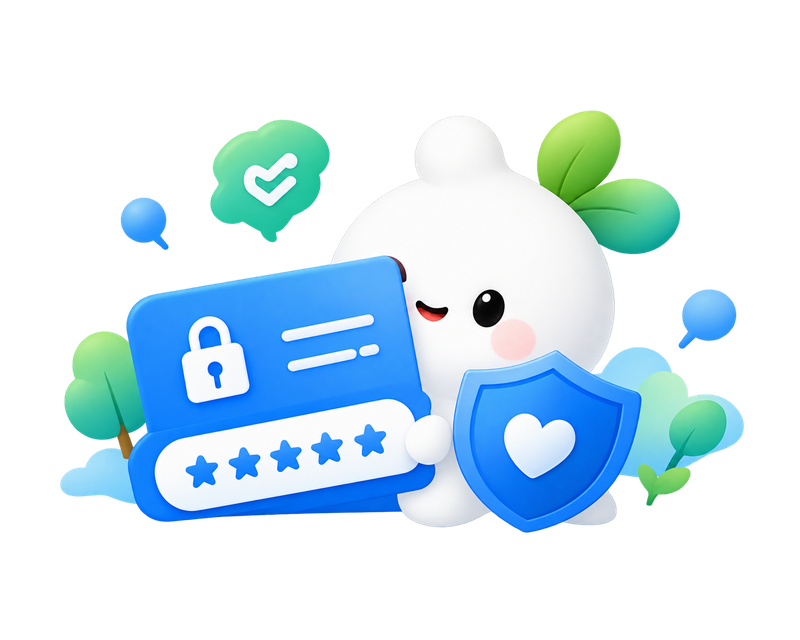

SNS 공개범위 확인
프로필과 게시물의 공개 대상을 확인했어요.
TAKE ACTION
 설정부터 바꿔볼까요?
설정부터 바꿔볼까요?
공개할 정보와 허용할 권한을 정하고, 계정에 필요한 보호 장치를 더해보세요.
ACCOUNT
탈퇴하기 전 필요한 자료를 백업하고, 연결된 서비스와 이용 조건을 살펴보세요.
PHOTO
게시물은 필요한 사람에게만 공개하고, 사진 속 개인정보는 가리거나 제외하세요.
PERMISSION
위치·카메라·마이크 권한을 살펴보세요. 앱 기능에 필요한 권한만 허용하고, 가능한 경우 사용 중에만 허용하세요.
PASSWORD
계정마다 다른 비밀번호를 사용하고 2단계 인증을 설정하세요. 복구 코드와 복구 수단도 안전하게 보관해요.

PRIVACY CHECK / 오늘의 보호 행동
직접 확인한 항목에 표시하면 진행률에 반영돼요.
프로필과 게시물의 공개 대상을 확인했어요.
앱별 위치 권한을 점검했어요.
쓰지 않는 계정을 정리했어요.
계정에 추가 인증을 설정했어요.
MAKE IT A HABIT
오늘 확인한 설정이 내일의 습관으로 이어지도록.